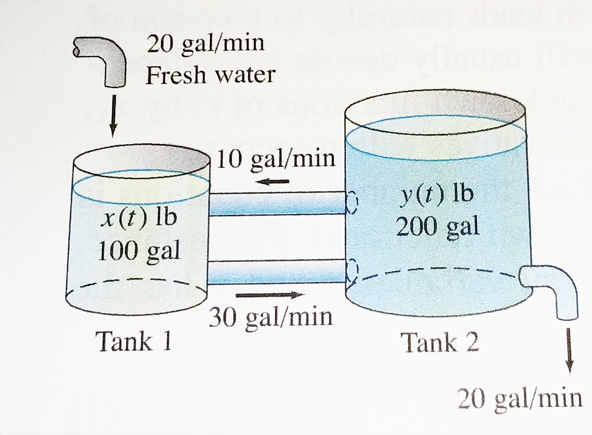

Lab 11. Systems of ODEs#
import numpy as np
import matplotlib.pyplot as plt
from scipy.optimize import fsolve
from scipy.integrate import solve_ivp
%matplotlib inline
Exercise 1.#
Consider the chemical reactions
If the concentrations of chemicals \(A\) and \(B\) are essentially constant we can write a system differential equations to model this system
where \(a,b,x,y\) are concentrations of chemicals \(A,B,X,Y\) respectively.
Let \(a=1\) and \(b=4\). Let \(x(0) = 1\) and \(y(0) = 4\).
Solve the system using solve_ivp.
In one figure, plot \(x\) and \(y\) versus time together.
In another figure, plot \(x\) versus \(y\) in a phase plane.
Explain your results using a text cell.
a = 1.
b = 4.
def bruss(t,v):
x,y = v[0],v[1]
dxdt = a + x**2*y - b*x - x
dydt = b*x - x**2*y
return(np.array([dxdt,dydt]))
ts = np.linspace(0,30,301)
#sol = solve_ivp(bruss,[0, 100.],[1.1,2.],t_eval=ts); #solve at specific times ts
sol = solve_ivp(bruss,[0, 100.],[1.1,2.],dense_output=True);
plt.plot(sol.t,sol.y[0],'r',sol.t,sol.y[1],'b');
plt.xlabel('time');
plt.legend(['x','y']);
plt.plot(sol.y[0],sol.y[1])
[<matplotlib.lines.Line2D at 0x1bdadb83100>]
sol.sol(3)
array([0.26278791, 4.80385861])
def func(t):
return(sol.sol(t)[1]-6.) #make a function that represents y(t) - 6 = 0
root = fsolve(func,4) #use fsolve to find a root of function above or where y(t) = 6
print(root) #print it
[4.72321919]
Exercise 2.#
Consider a mass \(m\) hanging from a ceiling by a spring with stiffness \(k\) and damping \(b\). Gravity acts in the positive \(y\) direction. Initially the mass is at rest and the spring is unstretched.
Draw a picture of the situation.
Write a differential equation for the motion of the mass. What is the initial condition?
What labels can you apply to the DE?
Solve analytically if possible.
Rewrite this as a system of first order DE.
Use solve_ivp to numerically approximate the solution.
Plot this approximation and the exact solution on one figure.
def springsys(t,v):
g= 9.8
m= 20.
k = 1.1
b = 0.75
y,z = v[0],v[1]
dydt = z
dzdt = -(k/m)*y - (b/m)*z + g
return(np.array([dydt,dzdt]))
ts = np.linspace(0,200,2001)
sol = solve_ivp(springsys,[0,200],[0.,0.],t_eval=ts)
plt.plot(sol.t,sol.y[0],'b');
Exercise 3. System of linear ODEs example#
{kind=link}
Set up a system of differential equations that represent the amount of salt in the tanks below.
Use the eig command to help you determine the analytical solution. (You have already done this a couple weeks ago.)
Set up a function that give the RHS of the system and implement a numerical solution using solve_ivp.
Plot the exact and approximate solutions for the amount of salt in the second tank in one figure.